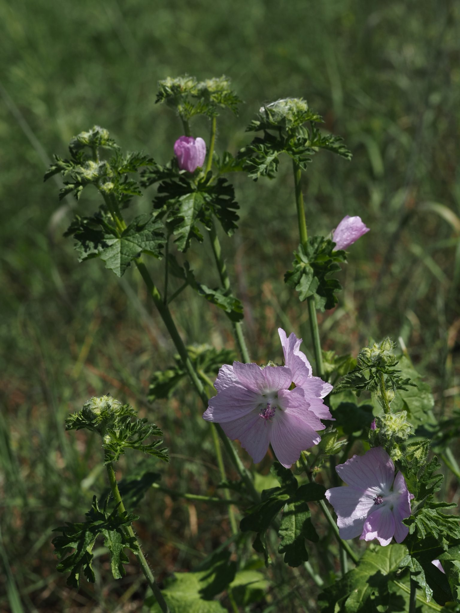
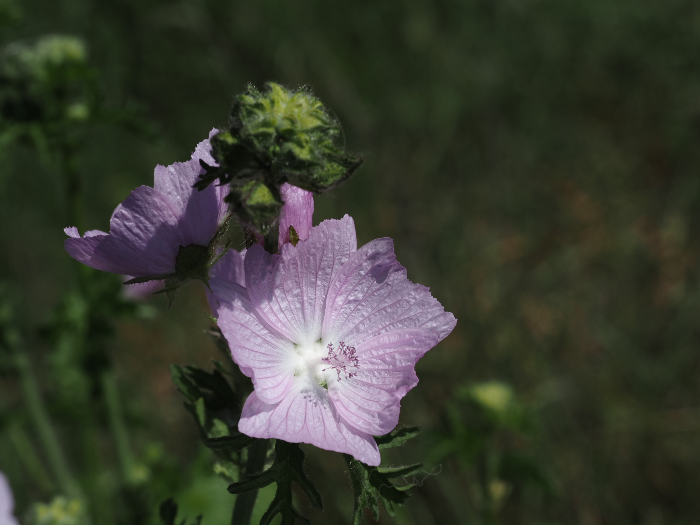

Zarte rosa Schalen mit dezentem Moschusduft – elegant und leicht zu übersehen.



Der namensgebende Duft
Wer ein Blatt der Moschus-Malve zwischen den Fingern zerreibt, nimmt einen feinen, an Moschus erinnernden Geruch wahr. Der Duft kommt nicht aus den Blüten, sondern aus winzigen Drüsen in den fein zerschlitzten Blättern. Im Englischen heißt sie deshalb „musk mallow" – im Deutschen passt der lateinische „moschata" im Namen wörtlich.
Blätter wie Petersilie, Blüten wie Pfingstrosen
Die Moschus-Malve hat einen ungewöhnlichen Blattdimorphismus: Die unteren Blätter sind rundlich-herzförmig, die oberen aber tief fünf- bis siebenteilig zerschlitzt – fast farnähnlich. Diese Strategie reduziert die Verdunstung in der Sonne und macht den Stängel robuster gegen Wind. Die zarten rosa Blüten überraschen mit ihrer Größe (3–5 cm) bei einer so unscheinbaren Pflanze.
Wissenswertes & Merksätze
Erkennungszeichen
Stängel schlank, oft niederliegend bis aufsteigend, behaart. Obere Blätter tief geteilt, untere rundlich. Blüten zart rosa, manchmal fast weiß, mit fünf gerundeten Blütenblättern. Außenkelch dreiblättrig (typisch für Malvengewächse).
Heilpflanze mit Tradition
Wie ihre Verwandten enthält die Moschus-Malve Schleimstoffe, die bei Halsentzündungen und Husten wirken. In der traditionellen Hausapotheke wurden Blätter und Blüten als Tee verwendet – nicht so kraftvoll wie der Eibisch, aber milder und besser im Geschmack.